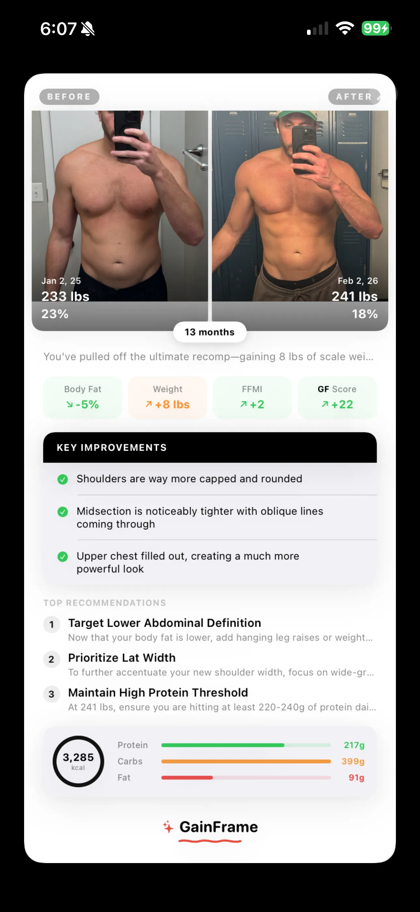
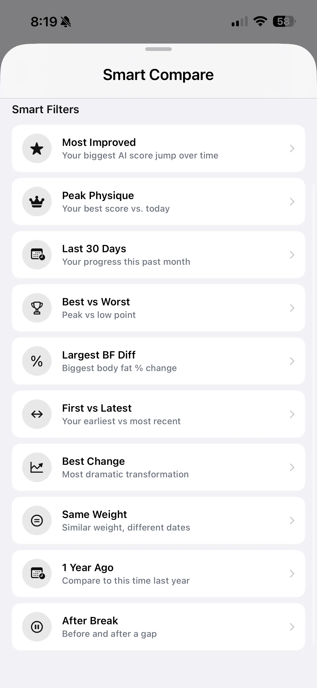

The Complete Guide to Progress Photos That Actually Track Change
Most progress photos are useless for measuring real change. Different lighting, random poses, inconsistent timing—every variable you don't control is noise that hides your actual progress. Here's how to fix that.

You've been taking gym selfies for months. Maybe years. But when you put two photos side by side, the comparison falls apart. Different lighting. Different angles. One was a mirror shot with the flash on; the other is a front-facing selfie in natural light. You know you've made progress, but the photos don't prove it.
This is the most common problem in progress photo tracking — and it has nothing to do with your physique. It's a consistency problem. Every variable you don't control — lighting, time of day, hydration, pose, camera distance — adds noise. Enough noise and your progress becomes invisible.
This guide covers the science behind why progress photos look so different from session to session, and the specific habits that fix it. You don't need a tripod, a ring light, or a dedicated photo studio. You need a system.
1. Why most progress photos are useless
Here's the uncomfortable truth: if your lighting, pose, and timing aren't controlled, your progress photos are measuring the wrong things.
Hard, directional light creates deep shadows that exaggerate muscle definition and lower your apparent body fat by several percentage points. Soft, flat light smooths everything out. A gym selfie taken under overhead fluorescents at 6pm after a carb-heavy meal looks completely different from a bathroom photo at 7am in natural light — even if your body hasn't changed at all.
Camera distance warps proportions. Standing two feet from the lens makes your torso look wider than standing six feet away. A mirror selfie shot from arm's length introduces barrel distortion that widens your midsection. And a slight change in posture — shoulders back vs. slouched, stomach braced vs. relaxed — can swing your visual impression more than a month of actual training.
The goal isn't perfect photos. It's comparable photos. Every tip in this guide serves one purpose: eliminate the variables that aren't your body so the only thing that changes between photos is your physique.
2. Lock in your lighting
Lighting is the single biggest variable in how your physique looks in a photo. Switching between hard overhead gym lights and soft bathroom light between photo sessions makes comparison impossible — the difference you see has more to do with the light source than your body.
The fix is simple: pick one spot and stick with it.
For most people, that's the gym locker room or the same corner of the same bathroom at home. The lighting doesn't need to be perfect. It needs to be repeatable.
Key consistency rules:
- Same room, same position. Stand in the same spot relative to the light source every time. A step to the left can shift shadows dramatically.
- Flash on or off — pick one and stay. Flash flattens light and eliminates ambient variation, but it also removes the shadow detail that shows definition. Either is fine; toggling between them is not.
- Avoid windows unless you shoot at the same time of day. Natural light changes color temperature and intensity by the hour. If your photo spot has a window, control for it by shooting at the same time.
Pro tip: Morning photos in natural light tend to be the most consistent day-to-day. The angle and intensity of morning light changes less than midday or evening light, giving you a more stable baseline across weeks.
3. Shoot in the morning before meals
Your body looks measurably different depending on when you photograph it. Hydration levels and intestinal contents significantly alter your appearance — especially around the midsection.
After a meal, your stomach distends. After drinking a liter of water, your skin sits differently. After a high-sodium dinner, you retain water subcutaneously, blurring definition you'd normally see. These fluctuations can add or subtract visible inches from your waist and smooth out muscle separation — none of which reflects actual body composition change.
First thing in the morning, before you eat or drink anything, is the most controlled window for progress photos.
- You're at a consistent, predictable level of dehydration
- Your stomach is flat (no food distension)
- Overnight water rebalancing gives you your "leanest" visual baseline
- It's the same metabolic state every day
If mornings don't work for your schedule, pick any time where you can be confident about a consistent level of fullness and hydration. The point isn't that mornings are magic — it's that your photos need to be taken in the same physiological state to be comparable.
4. Same background, same distance
Your backdrop affects how you perceive your physique in ways you wouldn't expect. A cluttered background with strong horizontal lines can make you look wider. A plain wall makes proportions easier to read. Dark clothing against a dark wall absorbs detail; light clothing against a light wall washes it out.
Pick a bare wall and don't move. Any room in your home with a neutral, uncluttered wall will work. A gym locker room with plain tiles is fine too. The key is that consecutive photos share the same backdrop so visual context stays constant.
Camera distance matters just as much. You look larger when you're closer to the lens and smaller when you're further away — that's basic lens perspective. But more importantly, the proportions of your body shift: close-up shots exaggerate whatever's nearest to the camera (usually your stomach or chest), while shots from 6+ feet away show truer proportions.
If you're using a mirror for selfies, find a floor tile, a mat edge, or a fixed mark and stand on it every time. Camera distance is the one variable that's hardest to control by eye but easy to control with a fixed position.
5. Two or three consistent poses — that's all you need
You don't need twelve angles. You need two or three that you can hit consistently every time you shoot.
The most informative poses for tracking physique changes:
- Front relaxed. Arms at your sides, standing naturally. Shows chest, shoulders, arms, and abs without the distortion of flexing.
- Back relaxed or back lat spread. The most underrated angle. Back development is invisible from the front, and it's often where the biggest visual changes happen.
- Side. Shows your posture, chest depth, arm thickness, and body fat distribution in a way that front-facing photos can't capture.
If you prefer to take both flexed and relaxed shots, do them in the same session. GainFrame classifies each photo into pose templates — Front, Back, Side, Front Flexed, Back Flexed — so your timeline stays organized. When you compare photos, you're always comparing the same pose to itself. Your "Front" timeline stays clean, your "Back" timeline stays clean.
Most people take random gym photos without any system. Then when they want to see their progress, they're comparing a front selfie from January to a side mirror shot from March. The result is confusing, not motivating.
Body positioning tip: decide whether you flex or stay relaxed, and keep it consistent. Also watch your posture — shoulders back vs. slouched can change your appearance more than you'd think. The rule is: whatever you do, do the same thing every time.
6. Use the Ghost Overlay Camera to replace a tripod
This is the feature that makes a tripod unnecessary.
GainFrame's built-in camera shows a transparent overlay of your last progress photo while you're shooting a new one. You can see your previous pose, angle, and framing right on top of the live viewfinder — and match it in real time.
Instead of trying to remember "Where was I standing? How was I holding the phone? Was I flexing or relaxed?" — you just line up with the ghost image and shoot.
The result: two photos that are nearly identical in pose, crop, and positioning. The only thing that changes between them is your physique — which is exactly what you want to compare.
Ghost Overlay
Transparent image of your last photo overlaid on the live camera. Match your exact pose without a tripod.
Auto Alignment
ML-powered body detection aligns your photos by shoulder line and torso position — even if you moved between shots.
Even if your overlay alignment isn't 100% perfect, GainFrame's auto body alignment uses machine learning pose detection to snap your photos into alignment on the compare screen. It detects your shoulders, torso, and hips and scales and positions each image so the body regions match — automatically. Learn more about how this works in our guide on comparing before-and-after progress photos.
7. Don't overthink the schedule
You don't need daily progress photos. In fact, daily photos are counterproductive — your body doesn't change visibly in 24 hours, so all you're tracking is water retention, meal timing, and lighting variation. When photos are taken too frequently, it's easy to get discouraged, because you're less likely to see noticeable changes between consecutive shots.
Once a week is the sweet spot for most people. Enough frequency to catch meaningful changes, not so frequent that it becomes obsessive or discouraging.
Pick a day and approximate time — for example, every Sunday morning before your first meal. Set a reminder if it helps. GainFrame can send you a weekly photo reminder notification on the day and time you choose.
There are two exceptions worth noting:
- Start and end of each training phase. If you're switching from a cut to a bulk (or vice versa), take a photo on the transition day. You won't see dramatic changes, but it creates a clean bookmark in your timeline for evaluating each phase separately.
- Getting very lean. As you go from "lean" to "very lean," visual changes happen faster. Below ~12% body fat, weekly or even biweekly photos start showing real, noticeable differences — and the feedback loop is motivating.
The key is consistency over perfection. A slightly imperfect photo taken every week for six months tells a much clearer story than a handful of "perfect" shots taken randomly.
Missing a week doesn't matter. What matters is the trend. GainFrame's AI analysis works best when it has at least 3 photos of the same pose spread across time — enough to identify patterns, not just noise.
8. Import your old photos — your timeline already exists
Here's the part most people miss: you probably already have months or years of progress data sitting in your camera roll.
Random gym selfies. Post-workout mirror shots. Beach photos from last summer. Photos you sent to friends or posted on Instagram and then forgot about. All of those are progress photos with body composition data that the AI can analyze.
GainFrame's batch import lets you select hundreds — or thousands — of photos from your camera roll at once. The AI automatically:
- Classifies each photo by pose. Front, Back, Side, Flexed — the AI determines which template each photo belongs to.
- Sorts them chronologically. Your timeline builds itself.
- Scores each photo. Every imported photo gets an AI physique score, so you can see how your number has changed over months or years.
- Aligns bodies for comparison. Even photos taken at different distances and angles get auto-aligned by shoulder and torso position.
The result? A transformation timeline that goes back as far as your camera roll does. You didn't need to start tracking from day one. You just needed to take the photos — and let the AI organize them later.

9. Use comparison reports to see what actually changed
Consistent photos are the input. Comparison reports are the payoff.
Once you have two or more photos with consistent conditions, GainFrame's Deep Dive Compare turns them into a data-driven progress report. Instead of squinting at two photos and thinking "I think I look bigger," you get hard numbers:
- Body fat delta. How much fat you've lost or gained between the two photos.
- Lean mass delta. Whether you're gaining muscle, losing it, or holding steady.
- FFMI change. Your fat-free mass index trajectory — the most meaningful strength metric for natural lifters.
- Individual muscle scores. 12 muscle groups rated independently, showing exactly where you've improved and where you're lagging.
- Personalized recommendations. Training and macro targets tailored to where you are now, not where you started.
This is what separates progress photos from progress tracking. A photo tells you roughly how you look. A comparison report tells you exactly what changed, by how much, and what to do next.

You can read the full breakdown of what the comparison report includes in our Deep Dive Compare feature guide.
10. When progress stalls, look further back
There will be months where you compare your latest photo to last month and feel like nothing changed. That's normal. Body recomposition is slow, and the closer you get to your genetic ceiling, the slower visible changes become.
When this happens, compare against a photo from 3, 6, or 12 months ago instead.
The month-to-month delta might be invisible. But the 6-month delta is usually dramatic — and it's the reminder you need that the process is working. Most goals take multiple months to achieve. When you feel like you're not approaching your destination fast enough, it's motivating to look back at how far you've already come.
GainFrame's Throwback feature does this automatically — it surfaces your best "Then vs. Now" comparison with body fat, weight, and score deltas. You can also use the smart compare filters to manually pick any date range and pose for a side-by-side comparison.
At the same time, evaluate honestly. Many people apply wishful thinking when viewing their own photos. The AI scores help here: they're objective, consistent, and don't care about your ego. If your score hasn't moved, your body composition hasn't meaningfully changed — regardless of what your eye wants to see.
The complete progress photo checklist
Every tip in this guide serves one purpose: make the only variable between your photos your actual physique. Here's the system:
- Same lighting, same spot. Pick one location and stick with it. Consistency beats quality.
- Morning, before meals. Minimize hydration and bloating variation.
- Same background, same distance. Mark your standing position if you can.
- Two or three repeatable poses. Front, Back, and Side cover everything that matters.
- Same attire, same posture. Flexed or relaxed — decide once and repeat.
- Ghost overlay camera. Match your last pose without a tripod.
- Weekly cadence. Regular beats frequent. Don't overthink it.
- Import your old photos. Your transformation timeline might already exist in your camera roll.
- Run comparison reports. Turn consistent photos into measurable, quantified progress.
- Look further back. When monthly progress stalls, the 6-month view tells the real story.
Start with what you have. GainFrame handles the alignment, the scoring, and the comparisons. You just have to show up, control the variables, and take the photo. Not sure if your current setup covers all the bases? Try our free progress photo setup tool — it walks you through each variable and scores your routine in under a minute.